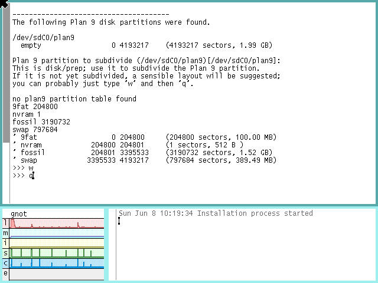

go back..

install
ingredients:
method:
- start a virtual machine with plan9.iso mounted in it's virtual disk drive, select 1 to start install:
- press return to accept the default DMA option:
- press return to accept the default mouse option:
- press return to accept the default resolution for install, we will change this later:
- press return to accept the default monitor type, and the window manager, rio will start:
- press return to start configuring the file system:
- press return to install just a fossil file system:
- press return to start partitioning the disk:
- select the disk to partition:
- create a master boot record:
- accept the default partition:
- subdivide the plan 9 partition:
- press return to select the partition we already created:
- accept the default subdivisions:

- initialise the disk:

- format the partition:

- mount the partition:
- choose the partition to mount:
- select the installation source:
- choose install from local media:
- mount install media:
- point to the install disk:
- press return to start looking on the disk:
- we can just type exit here, as the files are at the root of the disk:
- press return to start copying files to the filesystem:
- wait a while:
- press return to start setting up the boot:
- type plan9 so that plan9 starts by default on boot:
- install a master boot record:
- all done:
results:
- we now have a basic plan 9 system installed either in a virtual machine or on compatible hardware